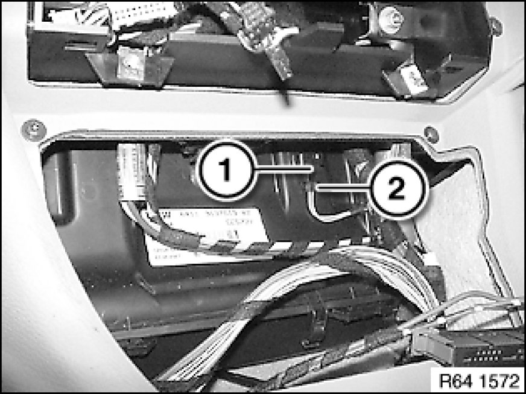

Heater Core Temperature Sensor / Switch: Service and Repair
64 11 910 - Removing and installing/replacing temperature sensor for heater core

Necessary preliminary tasks:
- Remove switch unit in center console Removing and Installing/Replacing Switch Unit in Center Console

Remove temperature sensor (1) and disconnect plug connection (2).